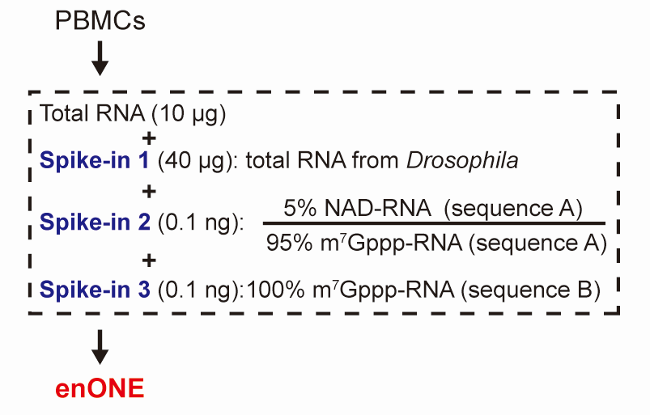
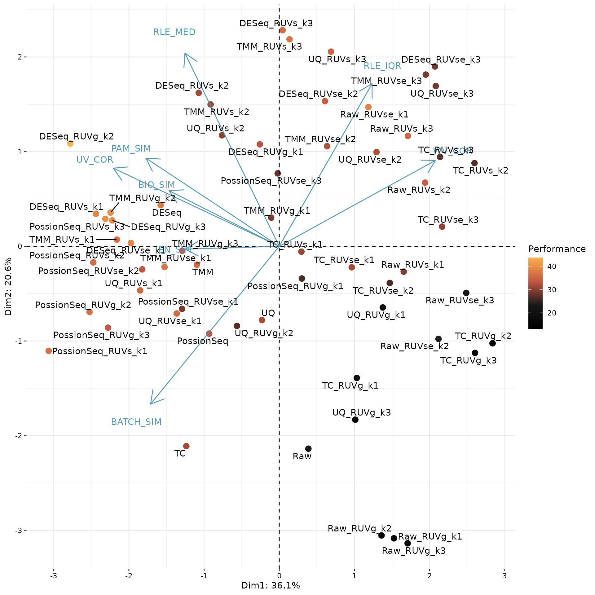
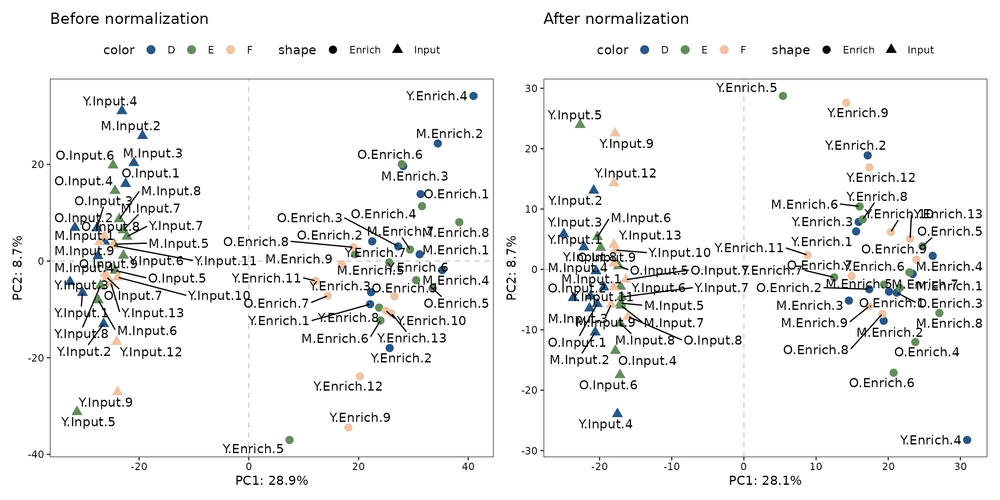
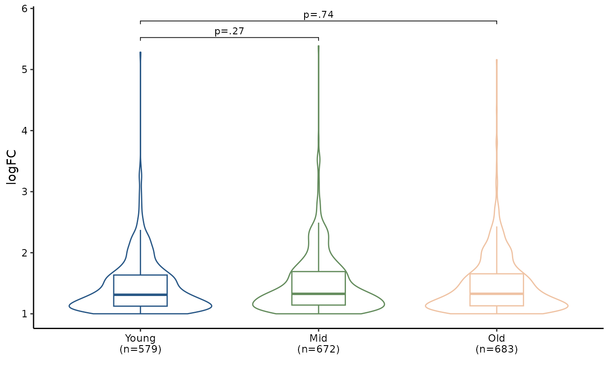

enONE_tutorial
enONE_tutorial.RmdIntroduction
The hub metabolite, nicotinamide adenine dinucleotide (NAD), can be
used as an initiating nucleotide in RNA transcription to result in
NAD-capped RNAs (NAD-RNAs). Epitranscriptome-wide profiling of NAD-RNAs
involves chemo-enzymatic labeling and affinity-based enrichment; yet
currently available computational analysis cannot adequately remove
variations inherently linked with capture procedures. Here, we propose a
spike-in-based normalization and data-driven evaluation framework,
enONE, for the omic-level analysis of NAD-capped RNAs.
enONE package is implemented in R and publicly available
at https://github.com/thereallda/enONE.
Setup
For this tutorial, we will demonstrate the enONE
workflow by using a NAD-RNA-seq data from human peripheral blood
mononuclear cells (PBMCs).
Notably, we included three types of spike-in RNAs:
- Total RNAs from Drosophila melanogaster, an invertebrate model organism with well-annotated genome sequence, for estimating the unwanted variation;
- Synthetic RNAs, consisting of 5% NAD- relative to m7G-capped forms, were used to determine the capture sensitivity;
- Synthetic RNAs, with 100% m7G-capped forms, were used to determine the capture specificity (Figure1 below).

Figure 1: Schematic workflow for total RNAs from PBMCs and three sets of spike-ins.
We start by reading in the data, including count matrix and metadata.
It is recommended to provide the assay group of samples with the
assay column in metadata.
library(enONE)
library(tidyverse)
library(patchwork)
# read in metadata and counts matrix
counts_mat <- read.csv("data/Counts.csv", row.names = 1)
meta <- read.csv("data/metadata.csv", comment.char = "#")
head(meta)
#> id sample.id condition batch assay
#> 1 D1 Y2 Y.Input D Input
#> 2 D2 Y10 Y.Input D Input
#> 3 D3 Y14 Y.Input D Input
#> 4 D4 Y16 Y.Input D Input
#> 5 D5 M13 M.Input D Input
#> 6 D6 M14 M.Input D InputNext, we use the count matrix to create a Enone
object.
The Enone object serves as a container that contains
both data (raw and normalized counts data) and analysis (e.g.,
normalization performance evaluation score and enrichment results) for a
NAD-RNA-seq dataset.
When constructing Enone object, we can provide following
arguments:
Prefix of spike-in genes (
spike.in.prefix = "^FB");The id of synthetic spike-in (
synthetic.id = c("Syn1", "Syn2")), same with row names incounts_mat;The id of input (
input.id = "Input") and enrichment (enrich.id = "Enrich"), same as the assay column.
Here, “Syn1” represent the spike-in with 5% NAD-RNA and “Syn2” is the spike-in with 100% m7G-RNA.
Notably,
batch.group,synthetic.idare optional.
# prefix of Drosophila spike-in genes
spikeInPrefix <- "^FB"
# create Enone
Enone <- createEnone(data = counts_mat,
bio.group = meta$condition,
enrich.group = meta$assay,
batch.group = meta$batch,
spike.in.prefix = spikeInPrefix,
synthetic.id = c("Syn1", "Syn2"),
input.id = "Input",
enrich.id = "Enrich"
)
Enone
#> class: Enone
#> dim: 76290 62
#> metadata(0):
#> assays(1): ''
#> rownames(76290): ENSG00000223972 ENSG00000227232 ... Syn1 Syn2
#> rowData names(3): GeneID SpikeIn Synthetic
#> colnames(62): D1 D2 ... F22 F24
#> colData names(5): id condition enrich replicate batchStandard workflow
The enONE workflow consists of four steps:
- Quality control;
- Gene set selection;
- Normalization procedures;
- Normalization performance assessment.
Quality Control
enONE initiate with quality control step to filter
lowly-expressed genes. This step is performed with
FilterLowExprGene by keeping genes with at least
min.count in at least n samples. n is determined by the
smallest group sample size specifying in group .
Enone <- FilterLowExprGene(Enone, group = Enone$condition, min.count = 20)
Enone
#> class: Enone
#> dim: 27661 62
#> metadata(0):
#> assays(1): ''
#> rownames(27661): ENSG00000227232 ENSG00000268903 ... Syn1 Syn2
#> rowData names(3): GeneID SpikeIn Synthetic
#> colnames(62): D1 D2 ... F22 F24
#> colData names(5): id condition enrich replicate batchAdditionally, outliers can be assessed and further removed (if
return=TRUE) by OutlierTest. Since no sample
is flagged as outlier, we will use all samples in following
analysis.
## ronser"s test for outlier assessment
OutlierTest(Enone, return=FALSE)
#> Rosner's outlier test
#> i Mean.i SD.i Value Obs.Num R.i+1 lambda.i+1 Outlier
#> 1 0 1.158348e-16 51.77231 80.37523 15 1.552475 3.212165 FALSE
#> 2 1 -1.317627e+00 51.14304 78.20437 19 1.554894 3.205977 FALSE
#> 3 2 -2.642993e+00 50.50717 70.38990 41 1.445991 3.199662 FALSERunning enONE
The main enONE function can be used to perform gene
selection, normalization, and evaluation. This function return selected
gene set in rowData, normalized count matrix in
counts slot (when return.norm=TRUE),
normalization factors (enone_factor slot), evaluation
metrics and scores in enone_metrics and
enone_scores slots, respectively. Detailed of these steps
are described bellow.
Enone <- enONE(Enone,
scaling.method = c("TC", "UQ", "TMM", "DESeq", "PossionSeq"),
ruv.norm = TRUE, ruv.k = 3,
eval.pam.k = 2:6, eval.pc.n = 3,
return.norm = TRUE
)
#> Gene set selection for normalization and assessment...
#> - The number of negative control genes for normalization: 1000
#> - Estimate dispersion & Fit GLM...
#> - Testing differential genes...
#> - The number of positive evaluation genes: 500
#> - Estimate dispersion & Fit GLM...
#> - Testing differential genes...
#> - The number of negative evaluation genes: 500
#> - Estimate dispersion & Fit GLM...
#> - Testing differential genes...
#> Apply normalization...
#> - Scaling...
#> - Regression-based normalization...
#> Perform assessment...Gene set Selection
For gene set selection, enONE defined three sets of control genes, including:
Negative Control (
NegControl): By default,enONEdefine the 1,000 least significantly enriched genes in Drosophila spike-ins (or other RNA spike-in from exogenous organism), ranked by FDR, as the negative controls for adjustment of the unwanted variations.Negative Evaluation (
NegEvaluation): By default,enONEdefine the 500 least significantly varied genes in samples of interest, ranked by FDR, as negative evaluation genes for evaluation of the unwanted variations.Positive Evaluation (
PosEvaluation): By default,enONEdefine the 500 most significantly enriched genes in samples of interest, ranked by FDR, as positive evaluation genes for evaluation of the wanted variations.
Gene set selection can either be automatically defined in
enONE function with auto=TRUE parameter
(default), or be provided in
neg.control, pos.eval, neg.eval parameters,
respectively.
Selected gene sets can be assessed by getGeneSet with
the name of gene set (i.e., "NegControl",
"NegEvaluation", "PosEvaluation").
getGeneSet(Enone, name = "NegControl")[1:5]
#> [1] "FBgn0031247" "FBgn0031255" "FBgn0004583" "FBgn0031324" "FBgn0026397"Normalization
enONE implements global scaling and regression-based
methods for the generation of normalization procedures.
For the global scaling normalization procedures, five different scaling procedures are implemented, including
Total Count (TC);
Upper-Quartile (UQ);
Trimmed Mean of M Values (TMM);
DESeq;
-
PossionSeq.
By default, enONE uses all scaling methods, while user can perform with selected scaling procedures in
scaling.methodparameter.
For the regression-based procedures, enONE use three
variants of RUV to estimate the factors of unwanted variation,
including
RUVg;
RUVs;
-
RUVse.
For instance, you can perform RUV with selected the first two unwanted factors with
ruv.norm=TRUE, ruv.k=2.
RUVse is a modification of RUVs. It estimated the factors of unwanted variation based on negative control genes from the replicate samples in each assay group (i.e., enrichment and input), for which the enrichment effect was assumed to be constant.
All applied normalization methods can be assessed by
listNormalization
listNormalization(Enone)
#> [1] "TC" "UQ" "TMM"
#> [4] "DESeq" "PossionSeq" "Raw"
#> [7] "Raw_RUVg_k1" "Raw_RUVg_k2" "Raw_RUVg_k3"
#> [10] "Raw_RUVs_k1" "Raw_RUVs_k2" "Raw_RUVs_k3"
#> [13] "Raw_RUVse_k1" "Raw_RUVse_k2" "Raw_RUVse_k3"
#> [16] "TC_RUVg_k1" "TC_RUVg_k2" "TC_RUVg_k3"
#> [19] "TC_RUVs_k1" "TC_RUVs_k2" "TC_RUVs_k3"
#> [22] "TC_RUVse_k1" "TC_RUVse_k2" "TC_RUVse_k3"
#> [25] "UQ_RUVg_k1" "UQ_RUVg_k2" "UQ_RUVg_k3"
#> [28] "UQ_RUVs_k1" "UQ_RUVs_k2" "UQ_RUVs_k3"
#> [31] "UQ_RUVse_k1" "UQ_RUVse_k2" "UQ_RUVse_k3"
#> [34] "TMM_RUVg_k1" "TMM_RUVg_k2" "TMM_RUVg_k3"
#> [37] "TMM_RUVs_k1" "TMM_RUVs_k2" "TMM_RUVs_k3"
#> [40] "TMM_RUVse_k1" "TMM_RUVse_k2" "TMM_RUVse_k3"
#> [43] "DESeq_RUVg_k1" "DESeq_RUVg_k2" "DESeq_RUVg_k3"
#> [46] "DESeq_RUVs_k1" "DESeq_RUVs_k2" "DESeq_RUVs_k3"
#> [49] "DESeq_RUVse_k1" "DESeq_RUVse_k2" "DESeq_RUVse_k3"
#> [52] "PossionSeq_RUVg_k1" "PossionSeq_RUVg_k2" "PossionSeq_RUVg_k3"
#> [55] "PossionSeq_RUVs_k1" "PossionSeq_RUVs_k2" "PossionSeq_RUVs_k3"
#> [58] "PossionSeq_RUVse_k1" "PossionSeq_RUVse_k2" "PossionSeq_RUVse_k3"Normalized counts can be assessed by Counts
head(Counts(Enone, slot="sample", method="DESeq_RUVg_k2"))[,1:5]
#> D1 D2 D3 D4 D5
#> ENSG00000227232 8.513936 11.645203 12.431441 7.453572 11.104087
#> ENSG00000268903 3.305409 8.100305 5.277670 26.325845 7.088225
#> ENSG00000269981 2.270299 4.876642 2.402698 18.118129 6.068101
#> ENSG00000279457 11.895695 9.998730 8.760526 11.204313 16.375896
#> ENSG00000225630 13.767575 16.292915 15.365490 10.140265 17.834578
#> ENSG00000237973 28.042040 37.277287 39.847772 34.078301 33.952026Evaluation
To evaluate the performance of normalization, enONE
leverages eight normalization performance metrics that related to
different aspects of the distribution of gene expression measures. The
eight metrics are listed as below:
BIO_SIM: Similarity of biological groups. The average silhouette width of clusters defined bybio.group, computed with the Euclidean distance metric over the first 3 expression PCs (default). Large values ofBIO_SIMis desirable.EN_SIM: Similarity of enrichment groups. The average silhouette width of clusters defined byen.group, computed with the Euclidean distance metric over the first 3 expression PCs (default). Large values ofEN_SIMis desirable.BAT_SIM: Similarity of batch groups. The average silhouette width of clusters defined bybatch.group, computed with the Euclidean distance metric over the first 3 expression PCs (default). Low values ofBAT_SIMis desirable.PAM_SIM: Similarity of PAM clustering groups. The maximum average silhouette width of clusters defined by PAM clustering (cluster byeval.pam.k), computed with the Euclidean distance metric over the first 3 expression PCs (default). Large values ofBAT_SIMis desirable.WV_COR: Preservation of biological variation. R2 measure for regression of first 3 expression PCs on firsteval.pc.nPCs of the positive evaluation genes (PosEvaluation) sub-matrix of the raw count. Large values ofWV_CORis desirable.UV_COR: Removal of unwanted variation. R2 measure for regression of first 3 expression PCs on firsteval.pc.nPCs of the negative evaluation genes (NegEvaluation) sub-matrix of the raw count. Low values ofUV_CORis desirable.RLE_MED: The mean squared-median Relative Log Expression (RLE). Low values ofRLE_MEDis desirable.RLE_IQR: The variance of inter-quartile range (IQR) of RLE. Low values ofRLE_IQRis desirable.
Evaluation metrics can be assessed by getMetrics
getMetrics(Enone)[1:5,]
#> BIO_SIM EN_SIM BATCH_SIM PAM_SIM RLE_MED
#> DESeq_RUVg_k2 -0.02467593 0.3576650 -0.03483061 0.5713398 9.319387e-06
#> PossionSeq_RUVs_k3 0.10240479 0.3374029 -0.03965069 0.5556398 9.971803e-05
#> TMM_RUVg_k2 -0.02664678 0.3518415 -0.03524885 0.5595637 8.500478e-05
#> DESeq_RUVg_k3 -0.04651463 0.3485155 -0.04427468 0.5708689 1.370353e-05
#> DESeq_RUVs_k1 0.03352455 0.3391415 -0.04444996 0.5224180 7.861089e-06
#> RLE_IQR WV_COR UV_COR
#> DESeq_RUVg_k2 0.011996148 0.7401496 0.3258051
#> PossionSeq_RUVs_k3 0.012314397 0.7709943 0.3154878
#> TMM_RUVg_k2 0.012089861 0.7404610 0.3288269
#> DESeq_RUVg_k3 0.011133971 0.6688187 0.4166522
#> DESeq_RUVs_k1 0.009145155 0.6495402 0.3680677Evaluation score is the average rank of each performance metrics,
which can be assessed by getScore
getScore(Enone)[1:5,]
#> BIO_SIM EN_SIM BATCH_SIM PAM_SIM RLE_MED RLE_IQR WV_COR
#> DESeq_RUVg_k2 32 59 40 59 56 25 20
#> PossionSeq_RUVs_k3 60 23 47 50 33 23 23
#> TMM_RUVg_k2 30 50 42 54 39 24 21
#> DESeq_RUVg_k3 20 48 53 58 54 29 12
#> DESeq_RUVs_k1 55 32 54 25 57 32 5
#> UV_COR SCORE
#> DESeq_RUVg_k2 59 43.750
#> PossionSeq_RUVs_k3 60 39.875
#> TMM_RUVg_k2 58 39.750
#> DESeq_RUVg_k3 39 39.125
#> DESeq_RUVs_k1 52 39.000Select the suitable normalization for subsequent analysis
enONE provides biplot to exploit the full space of
normalization methods, you can turn on the interactive mode with
interactive=TRUE.
# get performance score
enScore <- getScore(Enone)
# perform PCA based on evaluation score, excluding BAT_SIM column (3) if no batch information provided, and SCORE column (9).
# pca.eval <- prcomp(enScore[,-c(3, 9)], scale = TRUE)
pca.eval <- prcomp(enScore[,-c(9)], scale = TRUE)
# pca biplot
PCA_Biplot(pca.eval, score = enScore$SCORE, interactive = FALSE)
In this plot, each point corresponds to a normalization procedure and is colored by the performance score (mean of eight scone performance metric ranks). The blue arrows correspond to the PCA loadings for the performance metrics. The direction and length of a blue arrow can be interpreted as a measure of how much each metric contributed to the first two PCs
Here, we use the top-ranked procedure DESeq_RUVg_k2 for downstream analysis.
# select normalization
norm.method <- rownames(enScore[1,])
# get normalized counts
norm.data <- Counts(Enone, slot = "sample", method = norm.method)
# get normalization factors
norm.factors <- getFactor(Enone, slot = "sample", method = norm.method)
norm.method
#> [1] "DESeq_RUVg_k2"To be noted, if normalized counts are not returned in
enONErun step (i.e.,return.norm=FALSE), you can manually perform the normalization method, e.g.,# perform normalization Enone <- UseNormalization(Enone, slot = "sample", method = norm.method) # get normalized counts norm.data <- Counts(Enone, slot = "sample", method = norm.method)
Effect of normalization
We perform PCA based on the count matrix from sample of interest before and after the normalization, for demonstrating the effect of normalization.
# create sample name, e.g., Y3.Input
samples_name <- paste(Enone$condition, Enone$replicate, sep=".")
# PCA for raw count
p1 <- PCAplot(Counts(Enone, slot="sample", "Raw"),
color = Enone$batch,
shape = Enone$enrich,
label = samples_name,
vst.norm = TRUE) +
ggtitle("Before normalization")
# PCA for normalized count
p2 <- PCAplot(log1p(norm.data),
color = Enone$batch,
shape = Enone$enrich,
label = samples_name,
vst.norm = FALSE) +
ggtitle("After normalization")
# combine two plots
p1 + p2
#> Warning: ggrepel: 1 unlabeled data points (too many overlaps). Consider
#> increasing max.overlaps
Find enrichment
enONE package can help you find enrichment genes from
each biological groups via differential expression. It can identify
genes that significantly increased in enrichment samples compared to
input samples.
FindEnrichment automates this processes for all groups
provided in bio.group.
By default, enriched genes (NAD-RNA in here) are defined as fold
change of normalized transcript counts ≥ 2
(logfc.cutoff = 1), FDR < 0.05
(p.cutoff = 0.05) in enrichment samples compared to those
in input samples.
Use getEnrichment to retrieve a list of enrichment
result tables.
# find all enriched genes
Enone <- FindEnrichment(Enone, slot="sample", norm.method = norm.method,
logfc.cutoff = 1, p.cutoff = 0.05)
#> - Estimate dispersion & Fit GLM...
#> - Testing differential genes...
# get filtered enrichment results
res.sig.ls <- getEnrichment(Enone, slot="sample", filter=TRUE)
# count number of enrichment in each group
unlist(lapply(res.sig.ls, nrow))
#> Y.Enrich_Y.Input M.Enrich_M.Input O.Enrich_O.Input
#> 579 672 683Each enrichment table is a data.frame with a list of
genes as rows, and associated information as columns (GeneID, logFC,
p-values, etc.). The following columns are present in the table:
-
GeneID: ID of genes. -
logFC: log2 fold-change between enrichment and input samples. Positive values indicate that the gene is more highly enriched in the enrichment group. -
logCPM: log2 CPM (counts per million) of the average expression of all samples. -
LR: Likelihood ratio of the likelihood ratio test. -
PValue: p-value from the likelihood ratio test. -
FDR: False discovery rate of the p-value, default “BH” method is applied.
head(res.sig.ls[[1]])
#> GeneID logFC logCPM LR PValue FDR
#> 1 ENSG00000013275 2.271643 7.518198 731.6422 3.936608e-161 5.444329e-157
#> 2 ENSG00000113387 2.643018 9.732157 631.6712 2.164465e-139 1.496728e-135
#> 3 ENSG00000104853 2.244442 7.839256 587.7484 7.738626e-130 3.567507e-126
#> 4 ENSG00000105185 2.094086 6.147852 558.6392 1.662061e-123 5.746574e-120
#> 5 ENSG00000143110 3.084209 9.115976 550.0416 1.232914e-121 3.410239e-118
#> 6 ENSG00000173915 2.324782 7.005478 483.7653 3.239173e-107 7.466295e-104To convert list of enrichment result tables into data frame in long
format, enONE package provide reduceRes
function for this task. Finally, you can use
BetweenStatPlot to compare the global extent of NAD-RNA
modification level between groups.
# simplify group id
names(res.sig.ls) <- c("Young", "Mid", "Old")
# logfc.col specify the name of logFC column
nad_df1 <- reduceRes(res.sig.ls, logfc.col = "logFC")
# convert the Group column as factor
nad_df1$Group <- factor(nad_df1$Group, levels = unique(nad_df1$Group))
# draw plot
bxp1 <- BetweenStatPlot(nad_df1, x="Group", y="logFC", color="Group",
step.increase = 0.6, add.p = "p",
comparisons = list(c("Young", "Mid"),
c("Young", "Old")))
bxp1
Handling synthetic spike-in RNA
Since synthetic RNAs, of which one with 5% NAD-caps and another with 100% m7G-caps, are included, we can use these spike-ins to determine the capture sensitivity and specificity.
synEnrichment calculate the enrichment levels of
synthetic spike-ins with given normalization method.
DotPlot can be used to visualize the enrichment levels of
synthetic spike-in.
# compute synthetic spike-in enrichment
syn_level <- synEnrichment(Enone, method=norm.method, log=TRUE)
# transform to long format
syn_df <- as.data.frame(syn_level) %>%
rownames_to_column("syn_id") %>%
pivot_longer(cols = -syn_id,
names_to = "id",
values_to = "logFC") %>%
left_join(meta[,c("id","condition")], by="id")
# remove suffix of condition for simplification
syn_df$condition <- gsub("\\..*", "", syn_df$condition)
# rename facet label
samples_label <- setNames(c("5% NAD-RNA", "100% m7G-RNA"),
nm=c("Syn1", "Syn2"))
# draw dotplot
DotPlot(syn_df, x="syn_id", y="logFC", fill="syn_id") +
theme(legend.position = "none") +
scale_x_discrete(labels=samples_label)
#> Bin width defaults to 1/30 of the range of the data. Pick better value with
#> `binwidth`.
Syn1, which contained 5% NAD-RNA, are significantly enriched, whereas no enrichment is found for Syn2 made up with 100% m7G-RNA.
# save Enone data
save(Enone, file="data/Enone.RData")Session Info
Session Info
sessionInfo()
#> R version 4.3.0 (2023-04-21)
#> Platform: x86_64-pc-linux-gnu (64-bit)
#> Running under: Ubuntu 22.04.2 LTS
#>
#> Matrix products: default
#> BLAS: /usr/lib/x86_64-linux-gnu/openblas-pthread/libblas.so.3
#> LAPACK: /usr/lib/x86_64-linux-gnu/openblas-pthread/libopenblasp-r0.3.20.so; LAPACK version 3.10.0
#>
#> locale:
#> [1] LC_CTYPE=C.UTF-8 LC_NUMERIC=C LC_TIME=C.UTF-8
#> [4] LC_COLLATE=C.UTF-8 LC_MONETARY=C.UTF-8 LC_MESSAGES=C.UTF-8
#> [7] LC_PAPER=C.UTF-8 LC_NAME=C LC_ADDRESS=C
#> [10] LC_TELEPHONE=C LC_MEASUREMENT=C.UTF-8 LC_IDENTIFICATION=C
#>
#> time zone: UTC
#> tzcode source: system (glibc)
#>
#> attached base packages:
#> [1] stats graphics grDevices utils datasets methods base
#>
#> other attached packages:
#> [1] patchwork_1.1.2 lubridate_1.9.2 forcats_1.0.0 stringr_1.5.0
#> [5] dplyr_1.1.2 purrr_1.0.1 readr_2.1.4 tidyr_1.3.0
#> [9] tibble_3.2.1 ggplot2_3.4.2 tidyverse_2.0.0 enONE_0.1.0
#>
#> loaded via a namespace (and not attached):
#> [1] bitops_1.0-7 pbapply_1.7-0
#> [3] rlang_1.1.1 magrittr_2.0.3
#> [5] matrixStats_0.63.0 compiler_4.3.0
#> [7] flexmix_2.3-19 systemfonts_1.0.4
#> [9] vctrs_0.6.2 pkgconfig_2.0.3
#> [11] crayon_1.5.2 fastmap_1.1.1
#> [13] backports_1.4.1 XVector_0.40.0
#> [15] labeling_0.4.2 utf8_1.2.3
#> [17] rmarkdown_2.21 tzdb_0.4.0
#> [19] ragg_1.2.5 xfun_0.39
#> [21] modeltools_0.2-23 zlibbioc_1.46.0
#> [23] cachem_1.0.8 GenomeInfoDb_1.36.0
#> [25] jsonlite_1.8.4 EnvStats_2.7.0
#> [27] highr_0.10 DelayedArray_0.26.2
#> [29] fpc_2.2-10 BiocParallel_1.34.1
#> [31] broom_1.0.4 parallel_4.3.0
#> [33] prabclus_2.3-2 cluster_2.1.4
#> [35] R6_2.5.1 bslib_0.4.2
#> [37] stringi_1.7.12 limma_3.56.1
#> [39] car_3.1-2 GenomicRanges_1.52.0
#> [41] jquerylib_0.1.4 diptest_0.76-0
#> [43] Rcpp_1.0.10 SummarizedExperiment_1.30.1
#> [45] knitr_1.42 IRanges_2.34.0
#> [47] splines_4.3.0 timechange_0.2.0
#> [49] Matrix_1.5-4 nnet_7.3-18
#> [51] tidyselect_1.2.0 abind_1.4-5
#> [53] yaml_2.3.7 codetools_0.2-19
#> [55] lattice_0.21-8 withr_2.5.0
#> [57] Biobase_2.60.0 evaluate_0.21
#> [59] desc_1.4.2 mclust_6.0.0
#> [61] kernlab_0.9-32 pillar_1.9.0
#> [63] ggpubr_0.6.0 MatrixGenerics_1.12.0
#> [65] carData_3.0-5 stats4_4.3.0
#> [67] plotly_4.10.1 generics_0.1.3
#> [69] rprojroot_2.0.3 RCurl_1.98-1.12
#> [71] hms_1.1.3 S4Vectors_0.38.1
#> [73] munsell_0.5.0 scales_1.2.1
#> [75] class_7.3-21 glue_1.6.2
#> [77] lazyeval_0.2.2 tools_4.3.0
#> [79] robustbase_0.95-1 data.table_1.14.8
#> [81] locfit_1.5-9.7 ggsignif_0.6.4
#> [83] fs_1.6.2 grid_4.3.0
#> [85] edgeR_3.42.2 colorspace_2.1-0
#> [87] GenomeInfoDbData_1.2.10 cli_3.6.1
#> [89] textshaping_0.3.6 fansi_1.0.4
#> [91] viridisLite_0.4.2 S4Arrays_1.0.4
#> [93] paintingr_0.1.0 gtable_0.3.3
#> [95] DEoptimR_1.0-13 rstatix_0.7.2
#> [97] DESeq2_1.40.1 sass_0.4.6
#> [99] digest_0.6.31 BiocGenerics_0.46.0
#> [101] ggrepel_0.9.3 farver_2.1.1
#> [103] htmlwidgets_1.6.2 memoise_2.0.1
#> [105] htmltools_0.5.5 pkgdown_2.0.7
#> [107] lifecycle_1.0.3 httr_1.4.6
#> [109] MASS_7.3-58.4